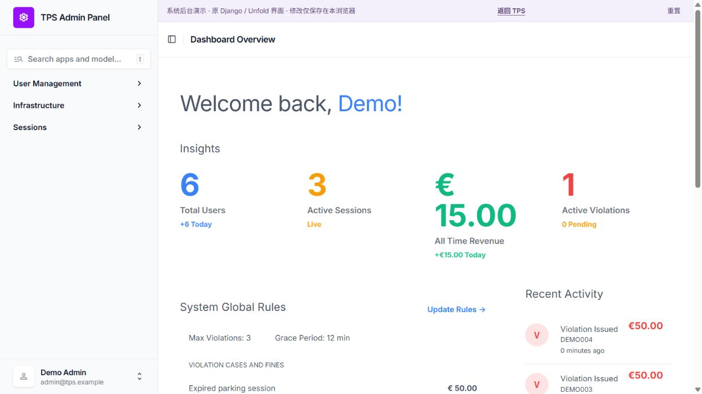

一次停车，四个视角
从哪一端开始？
选择一个角色，在独立页面中体验。
停车用户移动 App

找位、付费，安心停车。
浏览附近停车区域，选择车辆和时长，查看费用并启动停车会话，随时查看与续停。
体验停车用户端巡查员移动 App

核验车牌，确认状态。
开始巡查班次，查询车辆的有效停车与宽限状态，为过期停车记录模拟违规通知。
体验巡查员端管理员管理 Web 端

管理区域，掌握运营。
维护停车区域和车位，配置日间与夜间费率，通过价格模拟、会话与占用统计观察运营情况。
体验管理员端系统后台系统管理 Web 端

从账户权限，到全局规则。
管理用户和城市权限，维护停车资源，审核违规申诉，配置全局宽限期与违规规则。
体验系统后台